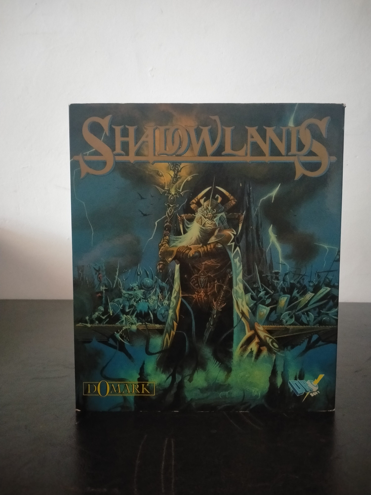

Ficha #000133
Shadowlands
Shadowlands es un juego de rol fantástico desarrollado por Teque London y publicado por Domark en 1992. El jugador dirige en tiempo real a un grupo de cuatro aventureros a través de mazmorras, ruinas y espacios exteriores, combinando exploración isométrica, combate, resolución de puzles y gestión individual de personajes. Su rasgo técnico más distintivo fue el sistema de iluminación dinámica, con fuentes de luz que proyectaban sombras y condicionaban la visibilidad, una solución especialmente avanzada para un CRPG de comienzos de los años noventa. Esta edición española para compatibles IBM PC fue editada y distribuida por Dro Soft en dos disquetes de 5,25 pulgadas y conserva el diseño físico de caja grande característico del mercado nacional de MS-DOS.
- Formato
- Big Box
- Plataforma
- MsDos
- Género
- Rol CRPG Dungeon crawler Fantasía Isométrico Tiempo real
- Serie
- Todos Big Box
- Desarrollador
- Teque London
- Distribuidor
- Domark, Dro Soft
- EAN
- —
Contenido de la edición
- Caja de cartón Big Box
- Manual de instrucciones
- 2 disquetes de 5,25 pulgadas
Preservación
- Protección
- No determinado
- Formato recomendado
- Otro
- Jugable en virtualización
- Sí
Edición distribuida en dos disquetes de 5,25 pulgadas. Se recomienda realizar un volcado sectorial individual de cada disco, documentar etiquetas y orden de instalación, y conservar el manual junto a las imágenes para verificar cualquier posible consulta documental no identificada.